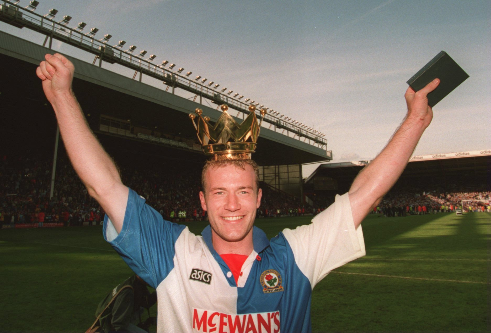
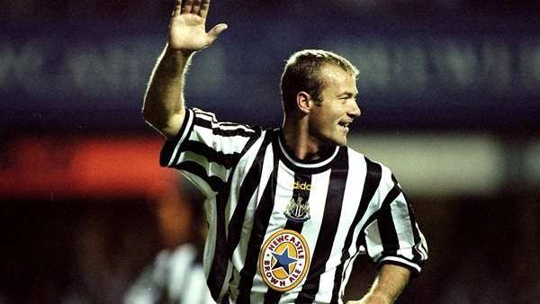
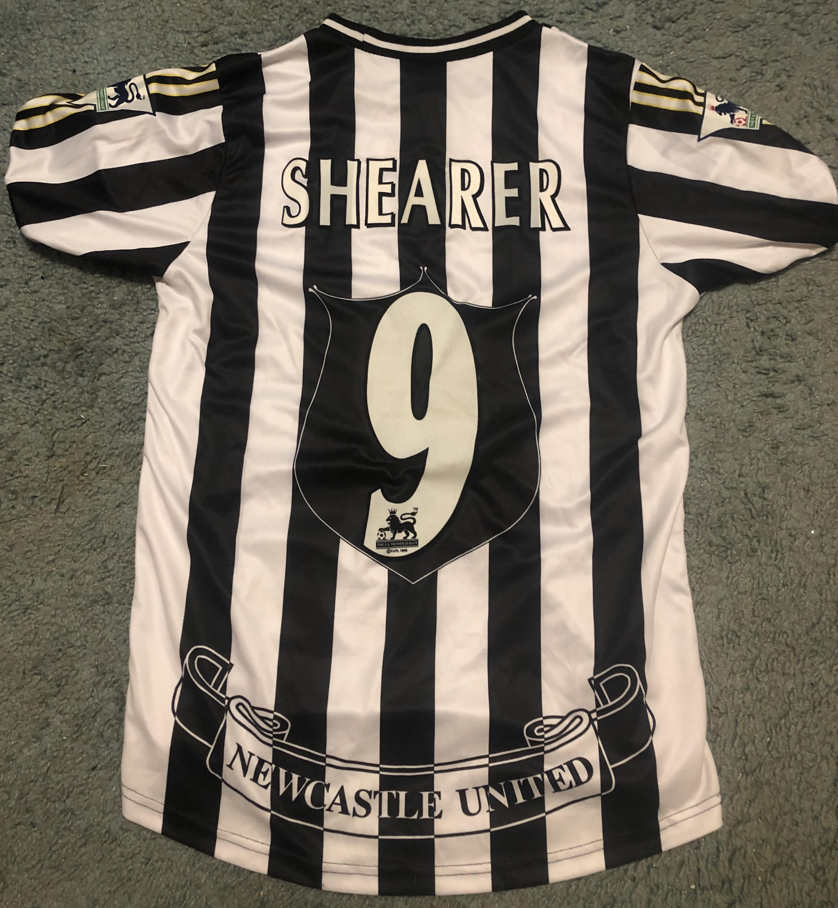

Early Soccer Career of Alan Shearer
Alan Shearer was born in Gosforth, Newcastle-upon-Tyne, UK on August 13, 1970. Although a born and raised Geordie whose favorite soccer club was Newcastle United, Alan Shearer would go on to sign a youth contract with Southampton in 1986, a move in which he described as one of the best things he did in his career in a podcast interview with the True Geordie. Alan Shearer spent little time waiting to make his mark on English soccer. In just two years time he would go on to make history - at the age of 17, he became the youngest player to ever score a hat trick (3 goals) in his debut of top division soccer (Premier League at the time was known as the English Football First Division)2.
Although it took a little time for a young Alan Shearer to fully adjust to top level soccer, in the 1991-1992 season, Shearer would go on to score 13 English Football First Division goals and 21 total goals in all competitions at the young age of 21. This lead Alan Shearer getting to sold to Blackburn Rovers for what was then a transfer payment record of 3.6 million GBP (roughly 4.6 million USD), a move that Blackburn would not come to regret2.
Although Shearer would deal with a brutal ACL tear, he would go on to score over 100 goals with Blackburn, win a PFA Player of the Year award and would lead them to a Premier League title in 1994-1995, being one of only 7 clubs to ever hold that honor. He would would also become the only player to ever score over 100 goals for two different clubs2.
Return to the Toon
In 1996, Alan Shearer was sold to his hometown club Newcastle United. Although the price isn't exactly known, it's assumed that it was a world record fee of around 15 million GBP. He turned down a chance to play for one of the most recognizable soccer clubs in the world, Manchester United, to go play for his hometown club2.
The Shearer years at Newcastle are considered to be the most successful and entertaining years in the club's history, despite not winning any trophies. In his first season with Newcastle United, he would go on to score 25 goals in 31 games, winning the Golden Boot in the process (award giving to the player with the most goals scored in Premier League season). In 1999, he would scored 5 goals in one game against Sheffield United, a Premier League record for most goals in a game3. He would also go on to lead the club to multiple top 5 finishes including finishing second place in 1996-1997, thrilling FA Cup and UEFA Champions League runs. After dealing with multiple, nagging injuries (including a knee injury in his final season), he would go on to retire after the 2005-2006 season, playing a total 395 matches for the club and solidifying himself as the greatest player to ever wear a Newcastle United jersey3.
Alan Shearer Post-Playing Career
After Alan Shearer retired from soccer, Shearer said multiple times in interviews years later that he always assumed he was going to be a manager and that's what he wanted to do. While his playing career is one of the best the Premier League has ever seen, the same cannot be said about his brief managerial career. During the 2008-2009 season during a dog fight relegation battle (relegation means getting demoted to the second league), new owner Mike Ashley would appoint Shearer for the final 9 games to save the club from getting relegated. In the end the club would end up getting relegated to the EFL Championship league and Shearer was not brought back next season.
After his brief unsucessful run as manager, Shearer would go into soccer punditry, where he currently works as an analyist for BBC's popular Match of the Day. Although he initially viewed punditry as a way to kill time before he would go back into management, he would soon go all in on punditry and has since never returned to management, saying in 2016,
"I'd be amazed if I ever went back into it. The longer you are out of it, the more difficult it is to get back in. You have got to have a real desire to do it, which I don’t."4
Although his managerial career was a failure, it hasn't changed Newcastle fans thoughts on their hometown hero. The most beloved Newcastle United player ever, the legend of Alan Shearer will forever be remembered as the best player to ever put on the numer 9 shirt and run around the stadium at St. James' Park.